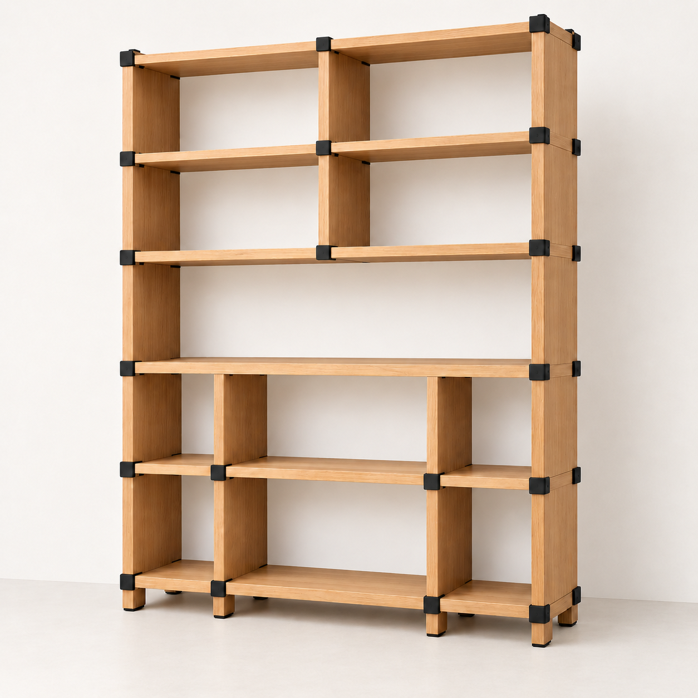
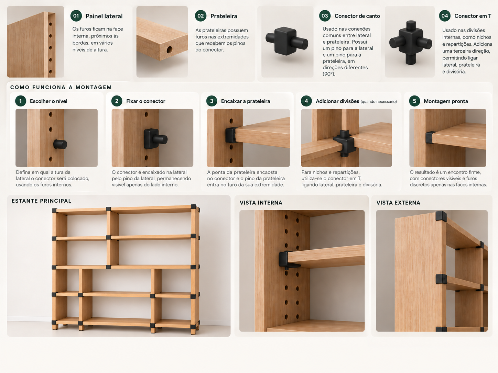

Móveis pouco flexíveis
Ambientes pequenos e mudanças de rotina exigem soluções que aproveitem melhor o espaço.
A Estante Modular Multifuncional foi pensada para mudar junto com o ambiente. As mesmas peças podem ser desmontadas, reposicionadas e conectadas novamente para assumir novas funções.

Em vez de um móvel preso a uma única função, a proposta é trabalhar com painéis, prateleiras e conectores reutilizáveis. O usuário reorganiza o conjunto sem precisar substituir todo o móvel.
Ambientes pequenos e mudanças de rotina exigem soluções que aproveitem melhor o espaço.
Laterais e prateleiras são ligadas por conectores removíveis e podem ocupar novas posições.
A modularidade prolonga o uso do conjunto e permite novas configurações com as mesmas peças.
O sistema usa furos nas faces internas das laterais e nas extremidades das prateleiras. Os pinos do conector entram nesses pontos e fazem a união entre as peças.
Possui pontos de encaixe internos, próximos às bordas e distribuídos em diferentes alturas.
Recebe os pinos do conector pelos furos localizados em suas extremidades.
Tem um pino para a lateral e outro para a prateleira, ligando duas direções.
Adiciona uma terceira direção para divisões e nichos internos.
Não existe transformação “mágica”: a modularidade vem dos pontos de encaixe. O usuário retira as peças, escolhe novas posições e conecta o mesmo conjunto novamente.

As configurações abaixo são aplicações possíveis do mesmo princípio modular. Elas devem respeitar a quantidade real de painéis, prateleiras e conectores disponíveis no conjunto.
Configuração vertical para organização e aproveitamento da altura.
Uma prateleira assume a altura de tampo e as demais peças formam apoio e nichos.
Estrutura mais baixa e horizontal, sem gavetas ou portas adicionadas.
Composição aberta para roupas e objetos, usando apenas as peças do sistema.
Reorganização em L para aproveitar encontros entre paredes.
Ao mudar de configuração, podem sobrar peças, mas a nova montagem não pode exigir mais laterais, prateleiras ou estruturas do que o conjunto original possui.
A proposta combina modularidade, durabilidade e melhor aproveitamento do espaço.
Painéis e prateleiras em MDF, com espessura proposta de aproximadamente 15 mm.
Peças escuras reutilizáveis, com pinos direcionais para unir os módulos.
Reconfigurar o mesmo conjunto ajuda a prolongar sua vida útil.
Hackateens — Concurso Moveleiro 2026
Unidade Ampére